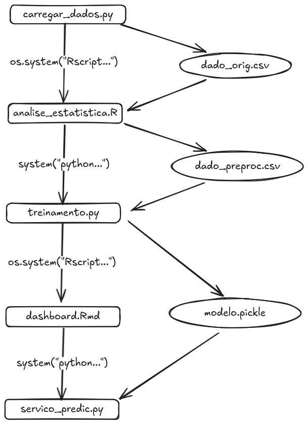

library(reticulate)reticulate
Reticulate
Reticulate é um pacote R para interoperabilidade com python.
Resolve problemas de workflows com passos “divididos” entre as duas linguagens:

O reticulate funciona gerenciando uma sessão python dentro da sessão R.
Ambiente python
É possível ver/criar/gerenciar ambientes python diretamente pelo reticulate .
Por exemplo, a função py_config exibe informações sobre o python, versão e pacotes instalados:
py_config()python: /home/lucasmp/.cache/R/reticulate/uv/cache/archive-v0/SrGCx2tK5Gawsp0avY5AJ/bin/python
libpython: /home/lucasmp/.cache/R/reticulate/uv/python/cpython-3.11.13-linux-x86_64-gnu/lib/libpython3.11.so
pythonhome: /home/lucasmp/.cache/R/reticulate/uv/cache/archive-v0/SrGCx2tK5Gawsp0avY5AJ:/home/lucasmp/.cache/R/reticulate/uv/cache/archive-v0/SrGCx2tK5Gawsp0avY5AJ
virtualenv: /home/lucasmp/.cache/R/reticulate/uv/cache/archive-v0/SrGCx2tK5Gawsp0avY5AJ/bin/activate_this.py
version: 3.11.13 (main, Jul 1 2025, 18:36:38) [Clang 20.1.4 ]
numpy: /home/lucasmp/.cache/R/reticulate/uv/cache/archive-v0/SrGCx2tK5Gawsp0avY5AJ/lib/python3.11/site-packages/numpy
numpy_version: 2.3.1
NOTE: Python version was forced by VIRTUAL_ENVA função py_install("<nome do pacote>") permite instalar novos pacotes no ambiente atual:
py_install("scikit-learn")Using virtual environment '/home/lucasmp/.cache/R/reticulate/uv/cache/archive-v0/SrGCx2tK5Gawsp0avY5AJ' ...+ /home/lucasmp/.cache/R/reticulate/uv/cache/archive-v0/SrGCx2tK5Gawsp0avY5AJ/bin/python -m pip install --upgrade --no-user scikit-learnSe necessário, execute
py_require("scikit-learn")para carregar o módulo instalado na sessão atual.
1: Executando scripts Python
A primeira forma de interoperabilidade é executando arquivos python dentro de um script R com a função source_python(<caminho do arquivo>):
source_python("hello_reticulate.py")hello reticulate !!!Se o script python define alguma função, ela (magicamente) pode ser chamada do R!
hello("R")hello R !!!nome[1] "reticulate"Cuidado: se houver alguma função ou variável com o mesmo nome no ambiente R, elas serão sobrescritas!
Outra forma de executar scripts em strings é a função py_run_string("<script python>")
py_run_string("
import math
print(math.pi * 2)
")6.2831853071795862: Importando módulos python
A segunda forma de interoperabilidade é importar módulos python com a função import("<nome do módulo>") .
skl = import("sklearn")As funções do módulo podem ser chamadas com o operador $ do R:
skl$datasets$load_diabetes(){'data': array([[ 0.03807591, 0.05068012, 0.06169621, ..., -0.00259226,
0.01990749, -0.01764613],
[-0.00188202, -0.04464164, -0.05147406, ..., -0.03949338,
-0.06833155, -0.09220405],
[ 0.08529891, 0.05068012, 0.04445121, ..., -0.00259226,
0.00286131, -0.02593034],
...,
[ 0.04170844, 0.05068012, -0.01590626, ..., -0.01107952,
-0.04688253, 0.01549073],
[-0.04547248, -0.04464164, 0.03906215, ..., 0.02655962,
0.04452873, -0.02593034],
[-0.04547248, -0.04464164, -0.0730303 , ..., -0.03949338,
-0.00422151, 0.00306441]], shape=(442, 10)), 'target': array([151., 75., 141., 206., 135., 97., 138., 63., 110., 310., 101.,
69., 179., 185., 118., 171., 166., 144., 97., 168., 68., 49.,
68., 245., 184., 202., 137., 85., 131., 283., 129., 59., 341.,
87., 65., 102., 265., 276., 252., 90., 100., 55., 61., 92.,
259., 53., 190., 142., 75., 142., 155., 225., 59., 104., 182.,
128., 52., 37., 170., 170., 61., 144., 52., 128., 71., 163.,
150., 97., 160., 178., 48., 270., 202., 111., 85., 42., 170.,
200., 252., 113., 143., 51., 52., 210., 65., 141., 55., 134.,
42., 111., 98., 164., 48., 96., 90., 162., 150., 279., 92.,
83., 128., 102., 302., 198., 95., 53., 134., 144., 232., 81.,
104., 59., 246., 297., 258., 229., 275., 281., 179., 200., 200.,
173., 180., 84., 121., 161., 99., 109., 115., 268., 274., 158.,
107., 83., 103., 272., 85., 280., 336., 281., 118., 317., 235.,
60., 174., 259., 178., 128., 96., 126., 288., 88., 292., 71.,
197., 186., 25., 84., 96., 195., 53., 217., 172., 131., 214.,
59., 70., 220., 268., 152., 47., 74., 295., 101., 151., 127.,
237., 225., 81., 151., 107., 64., 138., 185., 265., 101., 137.,
143., 141., 79., 292., 178., 91., 116., 86., 122., 72., 129.,
142., 90., 158., 39., 196., 222., 277., 99., 196., 202., 155.,
77., 191., 70., 73., 49., 65., 263., 248., 296., 214., 185.,
78., 93., 252., 150., 77., 208., 77., 108., 160., 53., 220.,
154., 259., 90., 246., 124., 67., 72., 257., 262., 275., 177.,
71., 47., 187., 125., 78., 51., 258., 215., 303., 243., 91.,
150., 310., 153., 346., 63., 89., 50., 39., 103., 308., 116.,
145., 74., 45., 115., 264., 87., 202., 127., 182., 241., 66.,
94., 283., 64., 102., 200., 265., 94., 230., 181., 156., 233.,
60., 219., 80., 68., 332., 248., 84., 200., 55., 85., 89.,
31., 129., 83., 275., 65., 198., 236., 253., 124., 44., 172.,
114., 142., 109., 180., 144., 163., 147., 97., 220., 190., 109.,
191., 122., 230., 242., 248., 249., 192., 131., 237., 78., 135.,
244., 199., 270., 164., 72., 96., 306., 91., 214., 95., 216.,
263., 178., 113., 200., 139., 139., 88., 148., 88., 243., 71.,
77., 109., 272., 60., 54., 221., 90., 311., 281., 182., 321.,
58., 262., 206., 233., 242., 123., 167., 63., 197., 71., 168.,
140., 217., 121., 235., 245., 40., 52., 104., 132., 88., 69.,
219., 72., 201., 110., 51., 277., 63., 118., 69., 273., 258.,
43., 198., 242., 232., 175., 93., 168., 275., 293., 281., 72.,
140., 189., 181., 209., 136., 261., 113., 131., 174., 257., 55.,
84., 42., 146., 212., 233., 91., 111., 152., 120., 67., 310.,
94., 183., 66., 173., 72., 49., 64., 48., 178., 104., 132.,
220., 57.]), 'frame': None, 'DESCR': '.. _diabetes_dataset:\n\nDiabetes dataset\n----------------\n\nTen baseline variables, age, sex, body mass index, average blood\npressure, and six blood serum measurements were obtained for each of n =\n442 diabetes patients, as well as the response of interest, a\nquantitative measure of disease progression one year after baseline.\n\n**Data Set Characteristics:**\n\n:Number of Instances: 442\n\n:Number of Attributes: First 10 columns are numeric predictive values\n\n:Target: Column 11 is a quantitative measure of disease progression one year after baseline\n\n:Attribute Information:\n - age age in years\n - sex\n - bmi body mass index\n - bp average blood pressure\n - s1 tc, total serum cholesterol\n - s2 ldl, low-density lipoproteins\n - s3 hdl, high-density lipoproteins\n - s4 tch, total cholesterol / HDL\n - s5 ltg, possibly log of serum triglycerides level\n - s6 glu, blood sugar level\n\nNote: Each of these 10 feature variables have been mean centered and scaled by the standard deviation times the square root of `n_samples` (i.e. the sum of squares of each column totals 1).\n\nSource URL:\nhttps://www4.stat.ncsu.edu/~boos/var.select/diabetes.html\n\nFor more information see:\nBradley Efron, Trevor Hastie, Iain Johnstone and Robert Tibshirani (2004) "Least Angle Regression," Annals of Statistics (with discussion), 407-499.\n(https://web.stanford.edu/~hastie/Papers/LARS/LeastAngle_2002.pdf)\n', 'feature_names': ['age', 'sex', 'bmi', 'bp', 's1', 's2', 's3', 's4', 's5', 's6'], 'data_filename': 'diabetes_data_raw.csv.gz', 'target_filename': 'diabetes_target.csv.gz', 'data_module': 'sklearn.datasets.data'}3: Abrindo uma sessão interativa
Executando repl_python() no terminal R é possível interagir com python por comandos.
Warning
Essa prática pode reduzir a reprodutibilidade do seu código. Ele é mais útil para depuração e testes rápidos.
4: Rodando python em notebooks R
R possui várias